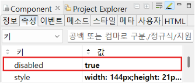
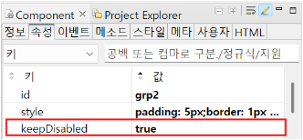

Group의 'keepDisabled' 속성 예제입니다. Group의 일부 자손 컴포넌트에 disabled 속성이 true로 적용되어 있는 경우, setDisabled 메소드를 사용하여 Group 전체의 disabled를 해제해도, 자손 컴포넌트의 disabled 여부를 보존하는 기능을 제공합니다. Group의 keepDisabled 속성이 true(default: false)일 경우, 기존의 disabled가 보존됩니다.
Group의 전체 자손 컴포넌트를 setDisabled 메소드로 disabled하기
Group의 전체 자손 컴포넌트를 setDisabled 메소드로 enabled하기
Group 전체를 enabled 처리했을 때, 자손 컴포넌트의 disabled를 유지하기 (keepDisabled="true")
1
STEP 1: 초기 상태를 확인합니다.
2개의 자손 컴포넌트가 disabled 되어있는 상태입니다.
2
STEP 2: 'setDisabled-true' 버튼을 클릭합니다.
3
STEP 3: 실행 결과를 확인합니다.
Group 전체가 disabled 됩니다.
4
STEP 4: 'setDisabled-false' 버튼을 클릭합니다.
5
STEP 5: 실행 결과를 확인합니다.
자손 컴포넌트의 disabled 여부는 무시되고, 전체가 enable 됩니다.
1
STEP 1: 초기 상태를 확인합니다.
2개의 자손 컴포넌트가 disabled 되어있는 상태입니다.
2
STEP 2: 'setDisabled-true' 버튼을 클릭합니다.
3
STEP 3: 실행 결과를 확인합니다.
Group 전체가 disabled 됩니다.
4
STEP 4: 'setDisabled-false' 버튼을 클릭합니다.
5
STEP 5: 실행 결과를 확인합니다.
자손 컴포넌트의 기존 disabled 여부가 유지됩니다.
1
Input에 속성을 설정합니다.
[필수] disabled="true"
컴포넌트를 비활성화 합니다.
Image 1.웹스퀘어 스튜디오의 Component View - 속성 설정 예시

Example 1.Source
<!-- Input 의 소스 본문 예시 --> <xf:input id="" style="width: 144px;height: 21px;margin-right: 10px;" disabled="true"></xf:input>
Group의 'setDisabled' 메소드를 사용하여 스크립트를 작성합니다. 세부 스크립트는 아래의 예시에 작성되어 있습니다.
Example 2.Script
//group 컴포넌트 하위의 모든 자손 컴포넌트를 disabled 처리합니다. //예제의 scwin.btn_disabledT1_onclick(), scwin.btn_disabledT2_onclick()에 작성되어 있습니다. groupId.setDisabled("true");
Group의 'setDisabled' 메소드를 사용하여 스크립트를 작성합니다. 세부 스크립트는 아래의 예시에 작성되어 있습니다.
Example 3.Script
//group 컴포넌트 하위의 모든 자손 컴포넌트를 enabled 처리합니다. //다만, keepDisabled 속성이 적용된 경우 하위 컴포넌트의 disabled 여부가 보존됩니다. //예제의 scwin.btn_disabledF1_onclick(), scwin.btn_disabledF2_onclick()에 작성되어 있습니다. groupId.setDisabled("false");
1
Group에 속성을 설정합니다.
[필수] keepDisabled="true"
setDisabled API 사용 시, 하위 컴포넌트의 disabled 여부를 보존할 수 있습니다.
Image 2.웹스퀘어 스튜디오의 Component View - 속성 설정 예시

Example 4.Source
<!-- Group 의 소스 본문 예시 --> <xf:group class="" id="grp2" style="padding: 5px;border: 1px dotted black;" keepDisabled="true"></xf:group>
keepDisabled
disabled
setDisabled